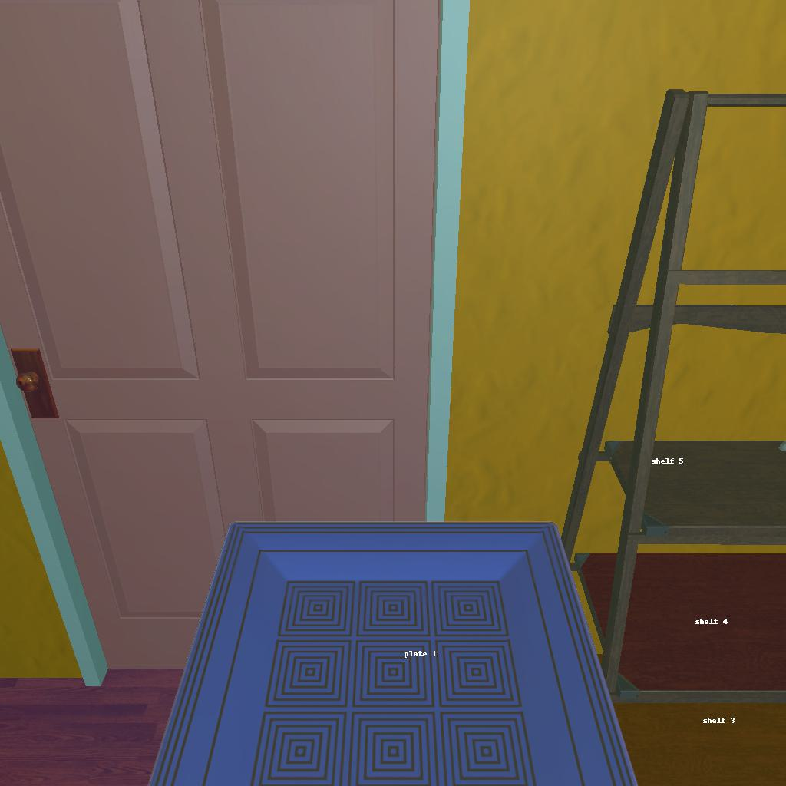

---------------------------------------------------------task: 3---------------------------------------------------------
--------------------------------------------------------------------------------------------------------------------------------------------------------------------
--------------------------------------------------------------------------------------------------------------------------------------------------------------------
Step:--------------------------------------------------------------------------9-------------------------------------------------------------------------------
----------------------------------------
VLM Prompt:
Image1:
Image2:
Image3:
**Instruction**
1. Analyze the provided image to identify all visible household objects, focusing on those relevant to the task description "look at plate under the floorlamp."
2. Use the analysis of the image and the task hint "The agent must find an object of the desired type, locate and turn on a light source with the desired object in-hand." to answer the question: what is the most reasonable action in the choices for the task description "look at plate under the floorlamp"?
4. Decide and write the answer using the template: The answer is: (i): , where i is the real number. If there is no desired object in the image, search every place based on **Initial Observation** to find the object. And if no one is exactly correct, choose a similar answer.
**Initial Observation**
You are in the middle of a room. Looking quickly around you, you can see armchair (1), garbagecan (1), tvstand (1), shelf (1-5), sofa (1), coffeetable (1), sidetable (1-2), drawer (1)
**Answer Choices**
(1): go to armchair 1
(2): go to garbagecan 1
(3): go to tvstand 1
(4): go to shelf 1
(5): go to shelf 2
(6): go to sofa 1
(7): go to coffeetable 1
(8): go to sidetable 1
(9): go to sidetable 2
(10): go to drawer 1
(11): go to shelf 3
(12): go to shelf 4
(13): put plate 1 in/on sofa 1
(14): examine sofa 1
**Answer**
Let's think step by step by following the instructions.
----------------------------------------
----------------------------------------
Original Response:
First, we need to identify the visible household objects relevant to the task description "look at plate under the floorlamp." In the images provided, we can see a plate labeled "plate 1" and shelves labeled "shelf 3," "shelf 4," and "shelf 5." However, there is no floorlamp visible in any of the images.
Next, we use the analysis of the image and the task hint to determine the most reasonable action for the task description "look at plate under the floorlamp." Since we cannot see a floorlamp in the images, we must search every place based on the initial observation to find the object.
Based on the initial observation, the objects in the room are armchair (1), garbagecan (1), tvstand (1), shelf (1-5), sofa (1), coffeetable (1), sidetable (1-2), and drawer (1). Since none of these are a floorlamp, and we need to find a light source to turn on with the plate in hand, we must find the floorlamp first.
None of the answer choices directly indicate finding or going to a floorlamp. However, the closest action that could potentially lead to finding the floorlamp is to explore the room further by going to different objects. Since "sidetable" could potentially be the place where a floorlamp is located, we choose the action to go to one of the sidetables.
The answer is: (8): go to sidetable 1.
----------------------------------------
----------------------------------------
>>> Refine Original VLM Response and Get Pure Action: go to sidetable 1
----------------------------------------
-----------------------------------------------------------------
Running time: 13.88304090499878 seconds
Total Money: 1.4569700000000003
-----------------------------------------------------------------
-----------------------------------------------------------------
Text Observation:You arrive at loc 7. On the sidetable 1, you see a floorlamp 1, a pillow 1, a laptop 1, a vase 1, a statue 1, a statue 2, a cellphone 1, a plate 2, a remotecontrol 1, a keychain 1, and a newspaper 1.
-----------------------------------------------------------------
UNSUCCEED